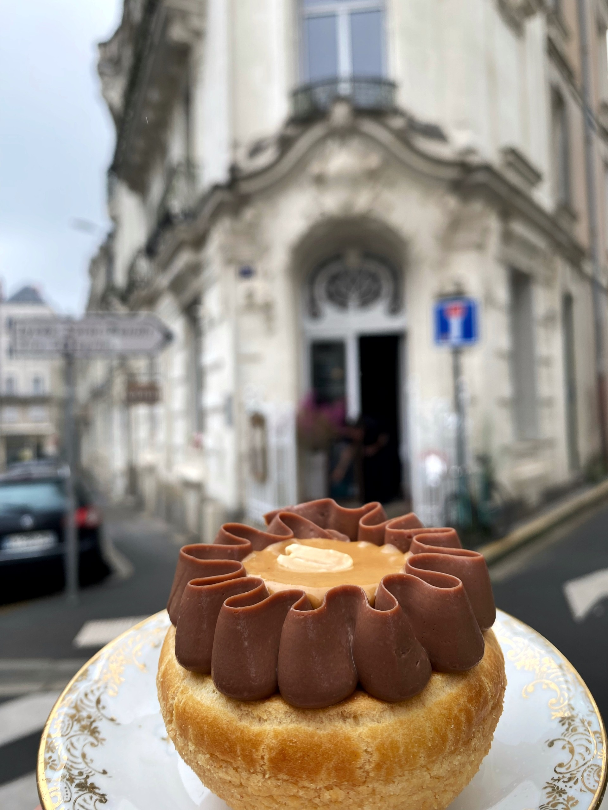

Comment faire connaître à Angers un lieu que la rue ne laisse pas deviner, à des gens qui ne vous suivent pas encore, et transformer cette visibilité en clients aux heures creuses comme en ventes à emporter ?
Le Chou est connu pour ses pâtisseries, mais pas encore assez comme un lieu à part entière. Vous voulez être connues sur Angers, et qu'on vous recommande autant pour le fait maison que pour l'accueil.
L'échéance. 15 000 abonnés et 20 000 à 30 000 vues par Reel d'ici mars 2027 — six mois à peine. Une audience se construit en amont de la saison qu'elle doit remplir.
Relevé du 26/08/2026 sur @le_chou_angers, 293 publications. La matière existe déjà, sans stratégie derrière.
Sur 40 Reels relevés : moyenne 8 066, de 295 à 47 700 vues. Un écart déjà là, jamais reproduit volontairement.
La portée existe : 12 Reels sur 40 dépassent les 7 683 abonnés. Sans format ni calendrier pour la reproduire.
Le Chou n'a jamais travaillé avec un vidéaste. Toute la production actuelle se fait en interne.
Le Chou a déjà des pics à 47 700, 18 300, 13 400, 13 200, 12 600 et 12 500 vues. Ils existent — mais rien ne les explique : pas de format identifié, pas de calendrier, pas d'intention derrière. L'accident, pas encore l'habitude.
Au rythme d'un Reel toutes les deux semaines, mars 2027 laisse une douzaine de publications pour transformer ces pics en rendez-vous récurrent — pas six mois pour improviser, une douzaine d'occasions pour installer un format.
Médiane actuelle : 6 366 vues. Objectif : 20 000 à 30 000 vues par Reel. Un cran au-dessus de leurs propres meilleurs posts (jusqu'à 47 700 vues) — pas hors d'atteinte, pas acquis non plus.
"Le lieu, le produit et une audience qui répond — le « latte du moment » l'a montré cet été. Ce qui manque, c'est la régularité."
Vous repartez avec un capital vidéo structuré : pas juste « des vidéos », mais un système de contenus pensé pour tenir l'échéance que vous vous êtes fixée.
Ce scénario s'écrit sur votre calendrier : une audience se construit en amont de la saison qu'elle doit remplir. Ce n'est pas une promesse de chiffres, c'est une trajectoire vers mars 2027.
Un ensemble de contenus complémentaires, chacun avec un rôle précis — faire découvrir le lieu, montrer le fait maison, élargir l'audience — puis un film signature, des contenus courts, et un message tenu dans la durée. Le fait maison n'est pas un volet parmi d'autres : c'est le fil qui traverse les six.
Le Chou est identifiable à sa façade, comme n'importe quelle pâtisserie de centre-ville. Ce que la rue ne montre pas, c'est le salon haussmannien et la grande cour intérieure derrière. Ce pilier installe la promesse avant même d'entrer : ici, ce n'est pas qu'une pâtisserie.
Estelle et Céline l'estiment elles-mêmes : la cour et le salon leur permettraient de faire jusqu'à 70 % de couverts en plus. Un potentiel qui commence par le faire savoir — personne ne devine ce lieu depuis la rue.
La façade discrète, puis le salon haussmannien, puis la cour. Céline et Estelle accueillent à l'image, ton parlé, un sourire — la découverte du lieu racontée par celles qui l'ont créé.
Reels · Instagram / FacebookLes deux fondatrices présentent leur maison en quelques phrases, gourmandes et complices, entre deux services : pourquoi cette cour, ce qu'elles veulent qu'on y trouve.
Reels · Instagram / FacebookFormat court et régulier : la vitrine discrète, puis la cour qui s'ouvre. De quoi installer l'idée qu'on découvre un lieu, pas juste une carte.
Reels Courts · HebdomadaireLa porte du 17 rue Saint-Martin s'ouvre. Céline et Estelle sont là, sourire complice, ton naturel : « Bienvenue chez nous. » La caméra suit leur pas jusqu'au salon haussmannien, puis jusqu'à la cour. Une accroche gourmande, un petit terme rigolo qui leur ressemble, en légende.
Tout est fait maison, rien n'est acheté — et elles veulent que ça se sache. Vendre moins, vendre mieux : la différenciation se joue sur le goût, la finesse, la qualité. Ce pilier montre le geste, pas seulement le résultat en photo.
Le fait maison est leur positionnement revendiqué, mais il ne se voit nulle part aujourd'hui. Montrer la matière, la préparation, le geste, c'est transformer une affirmation en preuve.
La matière première, la préparation, le geste. Bien cadré, net, un rythme dynamique — ce que « tout fait maison » veut vraiment dire, montré plutôt qu'affirmé.
Reels · Instagram / FacebookLes six pièces sucrées du Tea Time, préparées puis dressées. Ton gourmand, léger — la finesse comme argument, pas comme mot vide.
Reels · Instagram / FacebookÀ chaque nouvelle carte, un épisode filmé : les nouvelles pâtisseries présentées par Céline ou Estelle, ton parlé et souriant. Un rendez-vous que l'audience apprend à attendre.
Reels Courts · À chaque refonte de carteCéline pose une pâtisserie du jour sur le marbre du comptoir. Elle ne parle pas à la caméra, elle parle du produit — l'ingrédient, pourquoi il est arrivé cette semaine, la texture qu'on va trouver dedans. Ton gourmand, sourire, jamais scolaire. En quelques secondes, le fait maison devient une évidence, pas un argument.
Le Chou touche aujourd'hui un public de 18 à 70 ans, moyenne 30-40. Les hommes en font moins partie. Développer l'engagement passe par Facebook autant que par Instagram, par un produit d'entrée que la pâtisserie seule n'offre pas — le café, le brunch salé du midi — et par ceux qui ne peuvent pas s'asseoir : la clientèle de passage, le midi en semaine, la vente à emporter.
Le café fraîchement torréfié et le brunch salé du midi ne sont aujourd'hui filmés par personne, alors qu'ils touchent une audience que la pâtisserie sucrée seule n'attire pas encore. La bio Instagram renvoie déjà vers une commande en ligne via L'Addition, mais aucun contenu ne renvoie vers ce lien — un levier existant et inutilisé.
La mouture, l'extraction, la tasse posée sur le marbre. Bien cadré, net, un rythme dynamique — le café mérite le même soin que la pâtisserie, diffusé sur les deux plateformes.
Reels Courts · Facebook / InstagramUne table de brunch salé, filmée avec dynamisme, ton parlé et souriant. Un format complet qui fait venir des hommes et des 50-60 ans à table, pas seulement en vitrine.
Reels · Facebook / InstagramUn client régulier raconte ce qui le fait revenir. Votre réputation prend un visage — y compris celui d'une clientèle qu'on ne voit pas encore assez.
Reels / FacebookUne table de brunch dressée dans la cour, salée et sucrée côte à côte, une tasse de café qui fume. Céline ou Estelle sert, commente, sourit à la caméra — ton parlé, chaleureux, jamais figé. Le Chou donne envie de s'installer, pas seulement d'emporter.
Un film pilier, unique, qui repose sur Estelle et Céline à l'image, le lieu, et le fait maison. Il alterne salon haussmannien, cour intérieure et gestes de préparation, avec le ton naturel et souriant qu'elles réclament.
Le Chou n'a jamais eu de film qui le représente dans son ensemble. Un seul film, réutilisable partout, porte à lui seul le lieu, le fait maison et l'accueil — plutôt que des fragments épars.
Estelle et Céline à l'image d'un bout à l'autre, ton parlé, sourire, un petit terme rigolo qui leur ressemble. Pas de voix off anonyme : ce sont elles qui racontent leur maison.
Film Signature · Séquence d'ouvertureLe salon haussmannien, la cour intérieure sans vue depuis la rue, puis le geste fait maison en cuisine. Trois preuves dans un seul film, bien cadré, dynamique et chaleureux.
Film Signature · Corps du filmUn film long pour le site et les réseaux, décliné en plusieurs formats courts pour Instagram, Facebook et TikTok. Un seul tournage, plusieurs vies.
Film Signature · DéclinaisonsLa porte s'ouvre sur Estelle et Céline, ton naturel, sourire. La caméra les suit du salon à la cour, puis en cuisine pour un geste fait maison. Chaleureux d'un bout à l'autre, jamais contemplatif : le film qui dit, en une fois, tout ce que Le Chou est.
Chaque journée de tournage produit plus que le film signature : des capsules courtes, tirées du même moment, publiées sur la durée. C'est ce qui tient le rythme entre deux sessions.
Un Reel toutes les deux semaines ne suffit pas à tenir mars 2027. Des capsules courtes, produites sur le même tournage que le film signature, permettent de publier plus souvent sans multiplier les journées sur site.
Le garnissage d'un choux face caméra, à hauteur de comptoir. La poche à douille, le geste précis, la garniture qui monte jusqu'au ras du craquelin. Ton dynamique, pas de silence.
Reels Courts · En boutiqueÀ chaque nouvelle carte, une capsule courte présente les nouveautés, ton complice, léger. Un rendez-vous récurrent tiré du même socle de contenu.
Capsule Menu · À chaque refonte de carteLe café de passage, la boîte de pâtisseries qui se ferme, le geste d'emballage. Ton naturel et gourmand, pas contemplatif — la vente à emporter montrée comme un plaisir, pas une transaction.
Reels Courts · À emporterCéline tient une poche à douille au-dessus d'un choux ouvert en deux. Le geste est précis, répété des centaines de fois. Ton parlé, un commentaire léger en passant, un sourire — pas de silence contemplatif : la capsule qui montre le savoir-faire sans jamais paraître scolaire.
Cinq piliers de contenu ne suffisent pas sans un message tenu dans la durée. Trois idées fortes reviennent d'un format à l'autre, pour que Le Chou reste reconnaissable quel que soit le canal.
Cent vidéos déjà publiées, mais aucun message qui se répète d'un contenu à l'autre. Répéter les mêmes trois idées, sous des formats différents, construit une reconnaissance que le volume seul n'a pas produite.
L'idée revient dans chaque pilier : rien n'est acheté, tout se prépare sur place. Répétée, elle finit par s'installer.
Message centralLe salon haussmannien, la cour intérieure : l'idée de la découverte revient à chaque format, sans jamais être épuisée en une seule vidéo.
Message centralEstelle et Céline à l'image, ton parlé, humour léger : le registre demandé devient la signature reconnaissable de la maison.
Message centralLe film signature et les capsules courtes circulent sur Instagram et Facebook en priorité, avec une présence sur TikTok. La fiche Google, régulièrement consultée avant la visite, et lechouangers.fr — que Céline gère elle-même — reçoivent le film signature en page d'accueil.
Trois niveaux possibles, un seul objectif : tenir l'échéance de mars 2027 sur les six piliers.
Les trois packs posent les bases — le lieu découvert, le fait maison montré, un ton installé.
Pensé pour poser un premier socle : le lieu découvert, le fait maison montré, un ton installé — avant d'aller plus loin.
Pensé pour couvrir les six piliers de la stratégie : le lieu, le fait maison, l'audience élargie, le film signature, les contenus courts, le message.
Pensé pour aller au bout des dix-huit propositions : le lieu, le fait maison et le film signature couverts en profondeur, sur trois journées de tournage.
Ce qu'aucun pack ponctuel ne permet — sept publications par mois contre deux aujourd'hui.
Tenir mars 2027, ce qu'aucun pack ponctuel ne permet. Une session de tournage par mois, sept publications, un calendrier qui ne dépend plus de votre disponibilité.
déduits de votre premier trimestre d'abonnement si vous enchaînez après un pack Essentiel, Évolution ou Intensif.
Exemple : pack Essentiel 1 950 €, puis trois mois d'abonnement à 4 100 € au lieu de 4 500 €.
7 publications par mois contre 2 aujourd'hui. D'ici mars 2027 : 42 contenus publiés au lieu de 12.
Je travaille seul, et c'est un choix. Quand on se parle, c'est moi. Quand la caméra tourne dans la cour intérieure ou devant le comptoir, c'est moi. Le Chou mérite un interlocuteur qui connaît la maison, pas une équipe qui tourne pour plusieurs clients à la fois.
Le nombre de vidéos, formats et cycles de révision sont fixés au niveau retenu. Tournage et rendu en 4K, sous-titrés, prêts à mettre en ligne.
Du repérage sur site à la livraison finale : cadrage, tournage, montage, sous-titrage.
1 à 2 cycles de révision selon le niveau retenu, pour ajuster avant livraison finale.
10 à 15 jours ouvrés selon le niveau. Tournage en service creux, sur vos horaires, sans perturber la salle.
Les modalités précises — pourcentages, délais de rétractation — sont fixées au contrat signé au moment de la validation. Ce qui suit en pose le principe.
Cession complète pour vos réseaux sociaux et votre site, sans limite de durée. Les campagnes publicitaires payantes font l'objet d'une option distincte.
Non inclus dans les formules de base, disponibles en option sur demande.
Un acompte à la commande, le solde à la livraison. Paiement en plusieurs fois possible, notamment sur la formule Récurrence.
Conditions de retard de paiement, d'annulation et de report précisées au contrat signé en rendez-vous.
Approche reconnue pour la qualité du rendu visuel, la fluidité de collaboration, et la capacité à mettre en valeur des lieux et des produits avec une esthétique cinématique.
D'ici mars 2027, Le Chou n'est plus seulement « connu pour ses pâtisseries ». C'est devenu la maison dont le lieu se découvre autant que le fait maison se déguste, sur Angers et au-delà du cercle déjà acquis. Scénario, pas mesure acquise.
Le salon haussmannien et la cour intérieure, aujourd'hui invisibles depuis la rue, devenus la raison de pousser la porte.
Le geste, la matière, la préparation montrés — la différenciation revendiquée devenue une preuve visible.
Des hommes et des 50-60 ans touchés via Facebook autant qu'Instagram, par le café et le brunch du midi.
Un film qui porte le lieu, le fait maison et l'accueil, réutilisé sur le site et l'ensemble des réseaux.
Des contenus courts publiés au-delà d'un Reel toutes les deux semaines, tirés des mêmes tournages.
Trois idées fortes tenues d'un format à l'autre : le fait maison, le lieu, l'accueil chaleureux.
Ce document est la proposition présentée aujourd'hui. La validation se fait par le choix d'un niveau, la signature, et un acompte pour lancer le repérage sur site.
JMStudio : Production vidéo & motion design
06 89 30 84 23 · jmstudiovisuals@gmail.com
jmstudio.online · Nantes — déplacement à Angers inclus
